Guía de Estrategia General
De cero a experto — Recursos, economía, base, unidades, contadores y tácticas avanzadas de Empire Earth
De cero a experto — Recursos, economía, base, unidades, contadores y tácticas avanzadas de Empire Earth
La base de tu economía — qué recursos existen, cuánto necesitas y cómo obtenerlos
Empire Earth es un RTS que abarca desde la Prehistoria hasta la era Espacial. No hay una receta única de victoria: cada estilo de juego funciona si se ejecuta bien. Pero todos comparten un mismo pilar: una economía sólida.
Ciudadanos y unidades blandas. Huertos, caza, pesca, granjas.
Edificios, barcos, asedio. Bosques de regeneración lenta.
Torres, muros, maravillas. El recurso defensivo.
Unidades avanzadas, mejoras y sacerdotes.
Tanques, cibernética, armamento moderno.
| Época | Prioridad | Explicación |
|---|---|---|
| Prehistoria – Piedra | Comida para ciudadanos, madera para los primeros edificios. No hay oro ni hierro aún. | |
| Cobre – Hierro | La comida sigue siendo prioridad. Aparece el oro para unidades y el hierro empieza a importar. | |
| Medieval – Renacimiento | Oro y hierro compiten con la comida. La madera pierde peso salvo para barcos. | |
| Imperial – WW2 | El hierro es el rey: tanques, aviones, artillería. Oro para mejoras y sacerdotes. | |
| Moderna – Nano | Hierro y oro dominan. Cybers, tanques avanzados y armas de energía lo consumen todo. |
Manadas que se reproducen. Caza los pequeños para que crezcan los grandes.
50 madera por barco. Ideal en mapas costeros. Protege con barcos de guerra.
Graneros con 8 campos. Poblar con 8 ciudadanos duplica la producción.
6 mineros por pila. Asentamiento lleno = máxima eficiencia.
Cómo preparar y ejecutar tu plan de juego desde el primer segundo
Tournament: requiere menos recursos para avanzar de época (170 comida de Pre a Piedra). Standard: necesita muchas más reservas (1122 comida). Tournament acelera el ritmo; Standard permite partidas más largas.
Pequeño: más rushes. Mediano/Grande: balance entre exploración y combate. Gigante: mejor hacer boom y construir una segunda base cerca del enemigo para acortar distancias.
Activado: ves todo desde el principio. Pon 3/5 de ciudadanos en comida y 2/5 en madera, luego elige tu civ. Desactivado: pon ciudadanos a explorar mientras eliges civilización.
Normal como mínimo. Muy Rápido es 2.5× la velocidad normal. Juega siempre en Muy Rápido para acostumbrarte: las partidas multijugador serias usan esta velocidad.
Recomendado: Tournament / Low / Tierra. Pulsa F11 para ver el cronómetro.
5 ciudadanos iniciales al parche de comida más cercano. El 6º también a comida.
Ciudadanos 7 a ~12 al bosque. Acumula ~250 de madera.
Asentamiento junto a mina de oro o hierro. Ciudadanos constantes.
Primer edificio militar (barracón, establo o arquería). Empieza tropas.
Debes tener tu primera unidad militar lista. Defiende o ataca.
¿Ganas? Presiona. ¿Te atacan? Refuerza y contraataca. Siempre más ciudadanos.
Selecciona tropas y mantén Ctrl mientras haces clic en el destino. Las posiciones se mostrarán en naranja. Tus tropas atacarán automáticamente todo lo que encuentren en su camino.
No hagas un ataque masivo cada 10 minutos. Haz ataques pequeños y frecuentes. Pon el punto de reunión del barracón dentro de la base enemiga. Si no le das tiempo a recuperarse entre oleadas, su economía colapsa.
La prioridad #1 siempre es mantener producción constante de ciudadanos. Si te quedas sin comida para ciudadanos, has perdido. Puebla asentamientos cerca de oro/hierro (no cerca de comida o madera que se agotan).
El mejor momento es justo después de repeler un ataque enemigo. Ten 1.5× los recursos necesarios en Torneo (2.5× en Standard). Así no te pillan sin tropas durante la transición. Nunca avances durante un asedio activo.
RM (Random Map): empiezas con pocos recursos. La economía es tan importante como lo militar. DM: empiezas con recursos masivos. Prioriza edificios militares (15-20) desde el primer segundo.
La prioridad nº1 es mantener producción constante de ciudadanos. Sin ellos no hay economía, sin economía no hay ejército.
No llenes un asentamiento de ciudadanos si luego no puedes mantener el flujo de producción desde el nuevo centro urbano.
Gastar recursos en cambiar de era mientras te atacan es letal. Primero defiende, luego avanza.
Sin torres ni templos cerca de tus minas y granjas, un ataque rápido te dejará sin economía en segundos.
Usar un solo tipo de unidad te hace predecible y fácil de contrarrestar. Combina tipos para cubrir debilidades.
Ctrl+1 para grupos, doble clic en edificios para producciones masivas, Tab para ciudadanos inactivos. Marcan la diferencia.
Pulsa F11 para el cronómetro. Los primeros 10 minutos definen tu trayectoria.
Daña la economía enemiga más rápido de lo que cuesta recuperarse. Produce tropas baratas y ataca en oleadas. No malgastes oro o piedra si vas a rushear con tanques.
Objetivo: desequilibrar, no aniquilar.
Prioriza defensa y crecimiento. Construye una economía que te permita producir más, conseguir mejor tecnología o aplastar con ventaja de época.
Objetivo: ventaja tecnológica y numérica.
Justo después de una victoria militar. Tu enemigo está reconstruyendo; tú avanzas sin presión.
Ten 1.5× el coste en torneo, o 2.5× en estándar. Así no te quedas sin recursos para defenderte durante la transición.
Si te atacan activamente, gastar recursos en cambiar de era es letal. Defiende primero, avanza después.
Build order. Exploración. Primer contacto con el enemigo.
Expansión territorial. Forward Building cerca del enemigo. Coordina con aliados: rápidos distraen, pesados golpean.
Asalta desde múltiples direcciones. Si pierdes, traslada ciudadanos a territorio aliado. No te rindas sin avisar.
Estrategia de alto riesgo/recompensa. Elige Francia (o cualquier civ con bonus a comida y oro). Construye barracón inmediatamente. Primer sniper a los ~2 minutos: 150 oro + 150 comida. Envíalo directo a la base enemiga. Elimina ciudadanos en los parches de recursos. Si matas 6-7 ciudadanos rápido, el enemigo no se recupera. Lleva 1-2 doughboys de reserva para rematar heridos. Counter: torres defensivas bien colocadas o tu propio sniper en modo defensivo.
Hordas de arqueros montados con velocidad mejorada. Con los Asirios (+HP, +Alcance, +Velocidad para arqueros montados) puedes destrozar granjas y minas y retirarte antes de que te atrapen. Añade caballeros y catafractos para protegerlos de cuerpo a cuerpo. Usa profetas con Malaria contra las hordas enemigas. Counter: torres densas con solapamiento + templos para evitar calamidades.
Expansionismo + reducción de costes + caza y agricultura. Arqueros y mazos para presión temprana.
Deathmatch Industrial con Otomanos. Construye inmediatamente 12 establos y 4 fábricas de asedio. Mejora los dragones: ataque ×2, HP ×2, alcance ×1. Mejora las bombardas: alcance ×2, ataque ×2, HP ×1. Construye muchas torres y hospitales. Construye el Templo de Zeus para autocuración. Envía globos de observación sobre el enemigo y bombardea desde 13 de alcance. Carga con dragones y el héroe.
5 ciudadanos a huertos, 7–12 a madera. Edificio militar en cuanto puedas. Ciudadanos siempre.
Construye 4 casas para bonus de moral (+40% reducción de daño). No cargues contra una fuerza mixta de espadas y arqueros con tus espadas: perderás. Defiende, mejora armadura de espadas, pide ayuda al aliado. En la fase tardía, usa ballestas + catafractos: las ballestas destrozan espadas y arqueros en área; los catafractos absorben el daño. No uses trebuchets contra esta composición: las ballestas son 10× más efectivas.
Pulsa Tab constantemente para encontrar ciudadanos inactivos. Siempre hay algo que construir, expandir o mejorar. Si estás parado mirando la pantalla, estás perdiendo.
Rota las unidades heridas a la retaguardia y cúralas. Es más barato curar que reemplazar. Puedes salvar hasta el 60% de un ejército con buena microgestión de médicos.
Cómo construir, defender y optimizar tu asentamiento
2 casas (torneo) o 4 (estándar) dentro del radio del centro urbano. La línea verde/azul discontinua al seleccionar el TC muestra el área. Hasta un 40% de reducción de daño para todas las tropas dentro.
6 graneros en formación 3×2. Rodéalos con muros, torres y AA. Un ataque rápido de caballería puede aniquilar a todos los granjeros en segundos si no hay defensa. Defiende siempre las granjas.
Construye 6+ barracones. Doble clic en uno = seleccionas todos. Shift+clic en unidad = encolas 5 por barracón. Con 6 barracones produces 30 unidades de golpe. Convierte madera sobrante en barcos de pesca o granjas.
Una torre no sirve de nada. 10 empiezan a funcionar. 50 imponen respeto. 200+ crean una fortaleza. Colócalas en triángulo con solapamiento de rangos. Las torres son más útiles pre-Edad Oscura y de WW1 a Nano. En edades medias pierden eficacia.
Imprescindibles antes de la pólvora (profetas enemigos pueden arrasar tus defensas con terremotos) y en mapas de islas (un huracán bien puesto destruye una flota entera). Coloca templos entre tus torres y cerca de la costa.
Al menos un hospital por base: rota tropas heridas a retaguardia para curarlas. Es más barato que producir nuevas. Las AA guns deben ir escondidas entre edificios y árboles, protegidas por torres y guardias, o serán el primer objetivo de los marines.
Extraído de la guía de Ueriah. El secreto está en la distancia y la población.
Un minero lleva 15 de oro al centro urbano.
El mismo minero entrega 15, pero el capitolio lo multiplica.
Regla: coloca el asentamiento a máximo 2 casillas de la mina. Llena el asentamiento hasta 50 ciudadanos para duplicar la entrega de recursos. Un capitolio grande puede cubrir 2 minas distintas.
Cada punto de moral reduce el daño recibido en ~10%. Se indica con puntos verdes bajo la unidad (máximo 5 puntos).
Torre bajo área de TC: equivalente a 5 puntos de moral. Héroe Guerrero: radio de ~6 casillas. Ambos otorgan hasta un 50% de reducción de daño. La moral de héroes y casas no se acumula: se aplica la mayor.
Unidades, contadores y composición de escuadras
| Tu unidad | Aplasta a... | Le aplasta... |
|---|---|---|
| Infantería de choque (espada) | Arqueros | Lanceros, Piqueros |
| Infantería de lanza (picas) | Choque, Caballería | Arqueros, Armas de fuego |
| Arqueros | Lanceros | Infantería de choque |
| Infantería de pólvora | Lanceros, Caballería de fuego | Tanques, Artillería, Bombarderos |
| Caballería de espada | Arqueros, Pólvora, Cañones | Lanceros, Caballería de fuego |
| AT / Bazooka | Tanques | Anti-infantería |
| Anti-infantería (MG) | Infantería | Otra anti-infantería |
| Artillería de asedio | Edificios, grupos | Caballería rápida, Tanques |
| Fragata | Submarinos, Galeras | Acorazados |
| Acorazado | Fragatas, Costa | Submarinos |
| Caza | Bombarderos, Helicópteros | Anti-aéreo (AA) |
| Bombardero | Tierra, Mar, Edificios | Cazas, AA |
La infantería es frecuentemente menospreciada a partir de la WWI, sin embargo bien organizada en escuadras supera en eficiencia a los blindados puros.
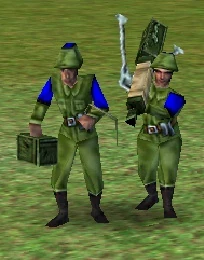
Columna vertebral. Excelente contra infantería y ciudadanos.
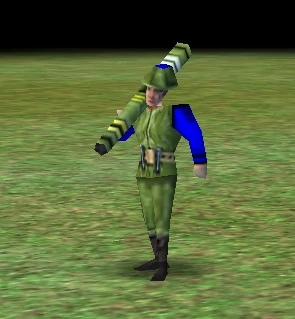
Antivehículo. Concentra varios para destruir blindados en una ráfaga.
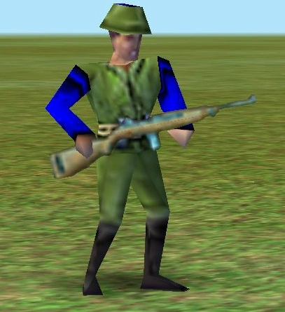
Se paga con hierro. Absorbe daño y protege artillería.
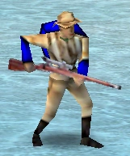
Un disparo = una baja. Modo Recon para no revelarse.
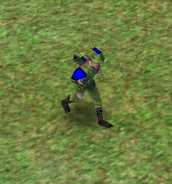
Daño en área. Dispara sobre muros.
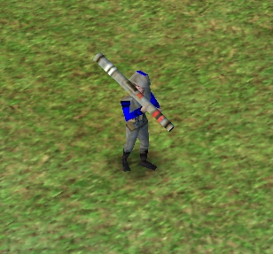
Defensa AA imprescindible en épocas modernas.
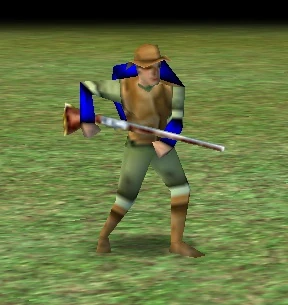
Atraviesa bosques. Emboscador de leñadores.
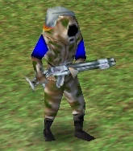
Demolición de edificios de alto PV.
Rota heridos hacia atrás. Multiplica durabilidad.
Ingeniero de combate: hospitales, torres, AA, cuarteles.
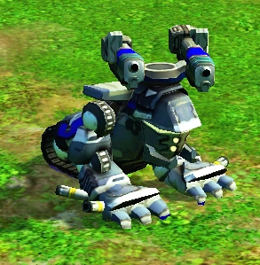
Defensa AA móvil. Más barato que fuerza aérea.
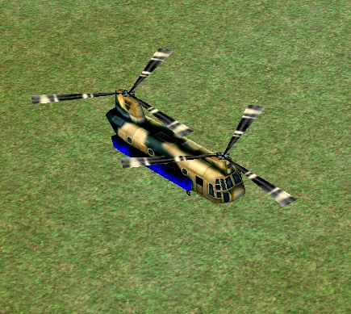
Incursiones relámpago: carga, arrasa, retírate.
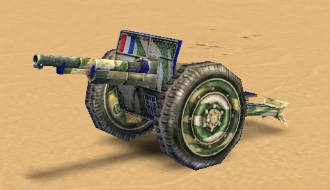
Complemento definitivo contra blindados.
Infantería: 4 ametralladores + 1 médico + 5 doughboys + 3 stingers | Tanques: 4 HE + 2 AP + 2 semiorugas
Técnicas avanzadas para dominar el campo de batalla
1 sniper · 1 médico · 5 doughboys · 1 ciudadano
El sniper elimina civiles; los doughboys distraen; el ciudadano construye barracones en territorio enemigo.
4 partisanos · 1 sniper · 1 médico
Incursiones en bosques contra leñadores. Zigzaguea. El sniper abate perseguidores uno a uno.
Usa waypoints en el centro urbano para enviar ciudadanos automáticamente a recursos. Construye 6 ciudadanos con waypoint en comida: los 6 irán solos. Pon waypoint en un asentamiento para poblarlo automáticamente con 5 ciudadanos sin seleccionarlos uno a uno.
No pongas una torre sola: pon 3-4 torres con muros entre ellas para canalizar al enemigo. Usa órdenes "Hold Ground" en arqueros para que disparen sin moverse. Las torres frenan a la IA pero un jugador humano las atraviesa: necesitas también tropas.
Envía ciudadanos y tropas a construir mini-bases lejos de tu base principal. Cada una con muros, torres, templo y guarnición. Así proteges minas lejanas y niegas recursos al enemigo. Si caen, tu base principal sigue intacta.
Selecciona tropas con lazo y arrastra hacia la dirección que quieres que miren. Los cuerpos a cuerpo en "Guard" mantienen la formación. Arqueros detrás, asedio atrás del todo. Unidades rápidas en los flancos para envolver al enemigo.
Coloca arqueros en colinas: los enemigos suben más lento y reciben disparos extra. Una línea de arqueros en altura puede destrozar elefantes antes de que lleguen. Usa bosques para ocultar tropas y emboscar.
Pon piqueros delante del asedio para detener caballería. Arqueros detrás de los piqueros para abatir infantería. Caballería rápida guardando los flancos del asedio. Nunca dejes el asedio sin escolta: es el primer objetivo del enemigo.
Cuando una unidad está herida, envíala a retaguardia con el médico. Es más barato curar que reemplazar. Con buena micro puedes salvar el 60% de tu ejército. Rota unidades del frente a retaguardia constantemente.
Pulsa Tab para ciclar ciudadanos inactivos. Pulsa Coma para unidades militares paradas. Nunca estés mirando la pantalla sin hacer nada: siempre hay algo que construir, expandir o mejorar.